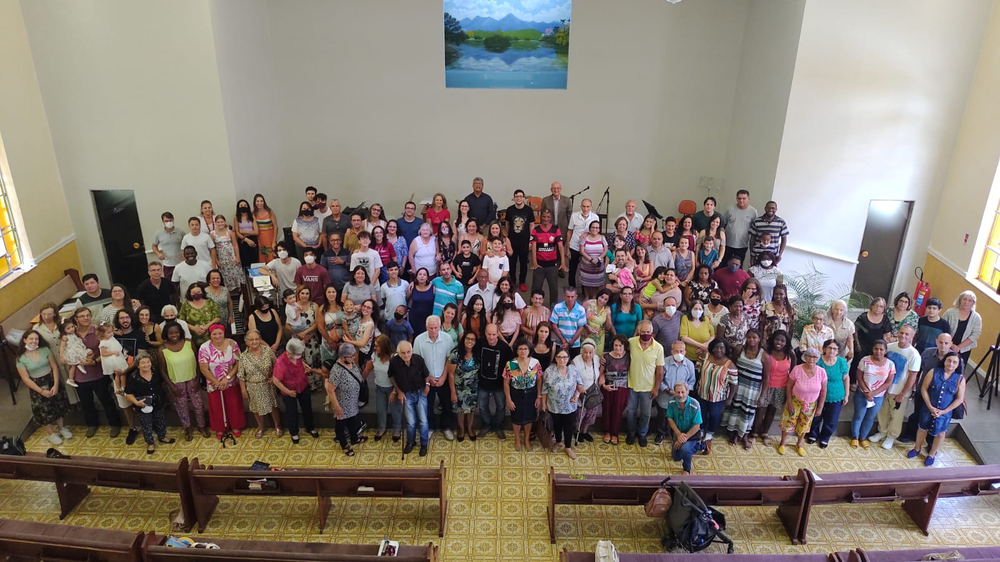

A Bíblia Sagrada
Cremos que a Bíblia é a Palavra de Deus inspirada, inerrante e suficiente. Ela é a nossa única regra de fé e prática.

Nossa Congregação — Segunda Igreja Batista de Nova Friburgo
Nova Friburgo — RJ
Desde 1947 servindo ao Senhor
Cremos que a Bíblia é a Palavra de Deus inspirada, inerrante e suficiente. Ela é a nossa única regra de fé e prática.

Nossa Congregação — Segunda Igreja Batista de Nova Friburgo